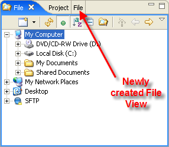

This page explains what the File View is and how to display it.
Contents |
Introduction
The File View gives you access to the entire file system on your local hard drive.
Instructions
Displaying and hiding the File View
To display the File View:
- From the Window menu, select Show View > Other... to open a Show Views pop-up window.
- On the Show Views pop-up window, expand the Aptana Views folder.
- Select the File View and click OK.
Aptana displays File View (shown below).

- To refresh the File View, click the Refresh button
 .
.
- To close the File View, click the Close button (X) in the upper right of the tab.
Displaying only certain folders and files in the File View
To only display the contents of a single folder, right-click that folder and select Browse From Here from the context menu. To display all folders again, click the Back button  .
.
To display web files (e.g. .html, .js, .css, .xml) only, click the Show Web Files Only button  at the top of the File View. To display all files, click the Show Web Files Only button
at the top of the File View. To display all files, click the Show Web Files Only button  again.
again.
Creating multiple File Views
You can create multiple File Views for your workbench. Using multiple File Views makes it easy to transfer files between locations, including your hard drive and FTP sites.
To create a second File View:
- On your currently open File View, click the Create a New File Explorer button to create the new View (shown below).

- You can now drag the new File View anywhere on your workbench to make it easier to work with.
{kind=link}
{kind=link}
Accessing your projects from the File View
If you want to access your projects from the File View, you can create a Project Shortcut. Project Shortcuts are useful for moving files around, such as when you are using FTP, and do not want to have to tab back and forth between the File View and the Project View.
To create a Project Shortcut:
- In the File View, right-click Project Shortcuts and select Add new Project... from the context menu to open a Project Site Configuration window.
- On the Project Site Configuration window, browse to the path for your project.
- Click OK.
Aptana creates a shortcut to your project under Project Shortcuts. Expand Project Shortcuts to see your new shortcut.